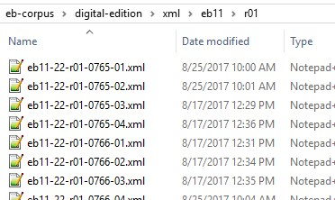

Digital Edition Folder
The second stage in the project is creating editions that we can analyze or place on the web. All files connected with either generating an edition or running an analysis of its data are contained here.
Overview
The Encyclopedia Project has two main organizational units. The production folder and the digital-edition folder. In the first, we generate textual data and store it in TEI master files. The digital-edition folder is where we use those master files to create new digital editions of the Encyclopedia and analyze the textual data.
XML is the preferred storage medium for text because of its ability to hold high levels of encoding and to transform that data into any preferred user format: pdf, HTML, txt, docx, or spreadsheet formats. In the production stage, we created basic XML master files for each entry, encoded with a rudimentary TEI schema. Those files can now receive additional encoding for higher-quality digital editions and enhanced analytical capability.
Figure: digital-edition folder
Primary folders
The two primary folders in the editions folder are the xml and xslt folders. These contain the master files and the scripts used to generate the different types of output.
- xml folder
- This folder contains the TEI pages after
Python has converted them into separate page files. It
is subdivided into print editions, entry letters, and sections. Note: We use a revised filename from this point forward to indicate the entry location in the print source: the print edition, volume, section, page number, and relative position of the entry on the page (some pages have multiple entries). Thus in the figure below, eb11-22-r01-0765-03.xml is the 3nd entry on page 765 of vol. 22 in the 9th edition.
Figure: xml folder

- xslt folder
- Here we store all of the transformation scripts used to generate digital editions and data that can be used for textual analysis.
Secondary folders
Secondary folders contain the output generated with the master files. These are place holders for the later stage of the Encyclopedia Project, after we have completed the production process. Their planned functions are as follows:
- analyses
- contains data visualizations used to analyse the textual data.
- css
- Stylesheets for use with the HTML edition files.
- database
- Textual data in CSV files or spreadsheets for analysis used to generate additional data visualizations.
- html
- Files for web-based digital editions.
- images
- Image files for use in web-based digital editions.
- text
- Plain text files suitable for text mining.
Below is the complete folder structure of the digital-edition folder in expanded form.
Figure: digital-edition folder